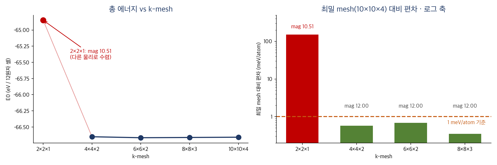

DFT 실습 [3] — k점 네 개가 물리를 부순 날
실습 [2]에서 정확도 다이얼 하나(ENCUT)를 잠갔으니, 남은 다이얼은 k-mesh입니다. 같은 요령이라 금방 끝날 줄 알았는데, 시작하자마자 사고를 하나 냈고, 마지막엔 "샘플링이 부족하면 계산이 부정확해지는 게 아니라 다른 물질이 되어버린다"는 것을 목격했습니다. 실패와 발견이 반반인 기록입니다.
0. 사고 보고서, 빈칸을 그대로 실행하다
이번 테스트는 훈련 삼아 완성 스크립트 대신 빈칸 뚫린 설계도를 받았습니다.
for K in ______ 같은 식으로요. 그리고 저는... 그 빈칸을 채우지 않고
통째로 붙여넣어 실행했습니다. bash는 관대해서 ______를 그냥
문자열로
받아들였고, kp______라는 폴더가 생기고, sed는 실패하고,
원본과 완전히 똑같은 설정의 무의미한 잡이 클러스터에 제출됐습니다.
qdel 5351 # 무의미한 잡 회수
rm -rf kp______ # 사고 현장 정리수습은 두 줄이었지만 교훈은 오래 갈 것 같습니다: 이해하지 못한 명령은 실행하지 않는다. 특히 qsub이 들어간 스크립트는 공용 자원을 쓰는 실탄입니다. "자동화는 쓰레기 입력을 대량 생산하는 장치이기도 하다"라는 경구를 소량 생산으로 체험했습니다.
1. 진짜 문제, bash에서 "2 2 1"은 하나가 아니다
ENCUT 테스트와 이번의 결정적 차이: ENCUT은 450 같은 단일 숫자였지만
k-mesh는 2 2 1처럼 공백 포함 세 숫자 세트입니다.
bash의 for 루프는 공백을 기준으로 항목을 쪼개기 때문에
for K in 2 2 1 4 4 2 ...라고 쓰면 열두 개의 숫자로 흩어져 버립니다.
해법은 언더스코어로 인코딩해 두고 루프 안에서 되돌리는 것:
for K in 2_2_1 4_4_2 8_8_3 10_10_4; do
M=${K//_/ } # "2_2_1" → "2 2 1"
cp -r test01 kp${K//_/} # 폴더명은 kp221처럼 붙여서
cd kp${K//_/}
rm -f WAVECAR CHGCAR CHG OUTCAR OSZICAR vasp.log CONTCAR
sed -i "s/6 6 2/$M/" KPOINTS # 이번 실험의 유일한 변경점
sed -i "s/NaMnO2_test/k${K//_/}/" jobscript
cd ..
done
(${K//_/ }는 "변수 K 안의 모든 _를 공백으로 치환"이라는 bash
문법입니다. 기준점 6×6×2는 이전 계산을 재활용하니 네 폴더만 새로 만들면 됩니다.)
2. 제출 전 검문소, 사고 이후 생긴 습관
아침의 사고 덕분에 새 습관이 생겼습니다. qsub 전에 반드시 grep으로 검문하기:
grep -B1 "0 0 0" kp*/KPOINTS # 각 폴더의 mesh 줄이 의도대로인가
grep ENCUT kp*/INCAR # ENCUT은 전부 520 그대로인가 (변인 통제)
grep "PBS -N" kp*/jobscript # 잡 이름이 서로 구분되는가세 출력이 전부 의도대로일 때만 발사. 30초짜리 검문이 헛계산 몇 시간을 막아줍니다. 이번엔 통과였고, 네 잡이 나란히 큐에 올라갔고, 노드가 한가해 십여 분 만에 전부 끝났습니다.
3. 결과, 그리고 빨간 점 하나
수확 (에너지와 자기모멘트를 같이 뽑았습니다, 이유는 곧):
kp221 E0= -.64848244E+02 mag= 10.5143 ← ??
kp442 E0= -.66651163E+02 mag= 11.9954
kp662 E0= -.66666258E+02 mag= 11.9991 (기준, 재활용)
kp883 E0= -.66662287E+02 mag= 11.9993
kp10104 E0= -.66658081E+02 mag= 11.9992
4. 주인공, mag = 10.51이 말하는 것
2×2×1의 에너지는 다른 점들과 원자당 150 meV나 벌어져 있습니다. 그런데 진짜 뉴스는 에너지가 아니라 자기모멘트입니다. 12가 아니라 10.5. 이론 [2]의 반례표를 기억한다면 이 숫자의 의미가 보입니다. 12(Mn³⁺ 고스핀)도, 9도, 6도 아닌 어중간한 값. 즉 이 계산은 "부정확한 NaMnO₂"가 아니라 NaMnO₂가 아닌 무언가로 수렴한 겁니다.
원리는 이렇습니다. k점은 결정 전체의 전자 상태를 대표하는 표본 지점들인데, 겨우 몇 개만 뽑으면 밴드를 채우는 일(어떤 상태까지 전자가 들어가는가) 자체가 왜곡되어 전자 점유 구조가 다른 상태로 자기일관 수렴해 버립니다. 샘플링 부족의 결과가 "잡음"이 아니라 "다른 물리"인 겁니다. 그래서 이 점은 수렴 곡선 위의 나쁜 점이 아니라, 애초에 같은 곡선 위에 있지 않은 점입니다.
실습 [2]에서 만든 건강검진 체크리스트의 ②번(에너지보다 mag 먼저)이 왜 그 순서인지, 오늘 실전으로 증명됐습니다. 에너지만 봤다면 "많이 틀리네" 하고 넘어갔을 것을, mag가 "이건 틀린 게 아니라 딴 물질이야"라고 알려준 겁니다.
5. 나머지 판독과 판결
4×4×2부터는 전부 건강합니다(mag 12.00). 최밀 mesh 대비 편차는 0.35~0.68 meV/atom 사이에서 오르락내리락하는데, ENCUT 때처럼 단조롭지 않은 이 ±0.5 meV/atom 진동이 k-샘플링 수렴의 전형이고, 우리 세팅의 "k 오차 막대"로 받아들이면 됩니다.
판결: 6×6×2 유지, 동결. 근거는 ① mag 건강, ② 최밀 대비 0.7 meV/atom 이내(진동 폭 안), ③ 실습 [1]에서 곱셈으로 검산한 관례(실공간 축 길이 × k점 수 ≈ 20~30 Å)와 일치, ④ 8×8×3은 진동 폭 안에서의 이동일 뿐인데 k점 수만 2.7배. 미래를 위한 메모 하나: 나중에 슈퍼셀로 가면 실공간이 커지는 만큼 k는 줄입니다(역공간 쌍대성). 2×2 슈퍼셀이면 3×3×2 정도.
이날 배운 것들
- 이해 못 한 명령은 실행하지 않는다. qsub이 든 스크립트는 실탄이다. 그리고 제출 전 grep 검문소 30초.
- 샘플링 부족은 잡음이 아니라 다른 물리를 만든다. 성긴 k-mesh는 전자 점유 자체를 바꿔 아예 다른 상태로 수렴시킬 수 있다. mag를 에너지보다 먼저 보는 이유다.
- bash에서 공백은 구분자다. "2 2 1" 같은 세트는 인코딩(2_2_1)해서 다루고, ${K//_/ }로 되돌린다.
- 정확도 다이얼 두 개가 모두 데이터로 잠겼다: ENCUT = 520, k-mesh = 6×6×2. 이제 이 두 줄은 프로젝트가 끝날 때까지 건드리지 않는다.
다음. 수렴 테스트가 끝났으니 드디어 세팅이 아니라 물리를 바꾸는 계산으로 갑니다. 같은 NaMnO₂에 U = 3.9 eV(출처: 이론 [3])를 걸었을 때와 안 걸었을 때, 그리고 r2SCAN으로 올라갔을 때 에너지·자기모멘트·전자구조가 어떻게 달라지는지의 비교입니다. 처음으로 "정답을 모르는 채" 하는 계산은 아니지만, 처음으로 물리적 주장을 시험하는 계산입니다.

Seok
연구하듯 사업합니다. 배터리 재료를 원자 단위에서 계산하는 법을 바닥부터 배우는 중입니다. → 연구 · DFT 글 더 보기